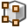
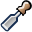
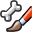
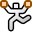

Режими об'єктів¶

Меню вибору режиму -- Mode.
Режими -- Modes -- це рівнева об'єктно-орієнтована функція у Blender'і, яка означає, що увесь застосунок Blender завжди знаходиться в єдиному режимі, і що доступні режими варіюються залежно від типу виділеного активного об'єкта -- більшість з яких мають доступним для них тільки стандартний Режим Об'єкта -- Object Mode (як камери, лампи тощо). Кожен режим передбачено для редагування певного аспекту виділеного об'єкта. Дивіться таблицю. Режими Blender'а -- Blender's Modes нижче про подробиці.
Ви установлюєте поточний режим у вибірнику «Режим» -- Mode заголовку 3D Огляду -- 3D View (дивіться ілюстрацію Меню вибору режиму -- Mode.).
Ghi chú
Ви можете виділяти об'єкти тільки у Режимі Об'єкта -- Object Mode. У всіх інших режимах виділення поточного об'єкта «заблоковане» (за винятком, певною мірою, у Режимі Пози -- Pose Mode для арматури).
Режими можуть впливати на багато речень у Blender'і:
- Вони можуть модифікувати панелі та/або контролери доступні у деяких вкладках Редактора Властивостей -- Properties editor.
- Вони можуть модифікувати поведінку цілого редактора, як наприклад Редактора UV/Зображень -- UV/Image Editor та 3D Огляду -- 3D View.
- Вони можуть модифікувати доступні інструменти у заголовку (меню та/або пункти меню, а також інші контролери...). Наприклад, у редакторі 3D Огляд -- 3D View меню «Об'єкт» -- Object у Режимі Об'єкта -- Object Mode змінюється на меню «Сіть» -- Mesh у Режимі Правки -- Edit Mode (при активному сітьовому об'єкті!) та на меню «Малювання» -- Paint у Режимі Малювання Вершин -- Vertex Paint Mode...
| Іконка | Ім'я | Скорочення | Подробиці |
|---|---|---|---|
| Object Mode | Нема [1] | Стандартний режим, доступний для всіх типів об'єктів, оскільки він призначений для модифікування блоку даних Об'єкт (наприклад, позиції, обертання, розміру). | |

|
Edit Mode | Tab [1] | A mode available for all renderable object types, as it is dedicated to their "shape" Object Data data-block editing (e.g. vertices/edges/faces for meshes, control points for curves/surfaces, etc.). |

|
Sculpt Mode | Нема [1] | Режим тільки для сітей, що дає доступ до інструментів 3D-ліплення сіті у Blender'і. |
| Vertex Paint Mode | Нема [1] | Режим тільки для сітей, що дозволяє вам задавати кольори для вершин сіті (тобто «малювати» по них). | |

|
Weight Paint Mode | Ctrl-Tab [2] | Режим тільки для сітей, призначений для задання вагомостей для груп вершин. |
| Texture Paint Mode | Нема [1] | Режим тільки для сітей, що дозволяє вам малювати текстуру безпосередньо на сітьовій моделі у 3D Оглядах. | |
| Particle Edit Mode | Нема [1] | Режим тільки для сітей, призначений для систем частинок, корисний для редагованих систем (волосся). | |

|
Pose Mode | Ctrl-Tab [2] | Режим тільки для арматур, призначений для позування (поставлення у пози) арматури. |
| Edit Strokes Mode | D-Tab | Режим тільки для Нарисного Олівця -- Grease Pencil, призначений для редагування штрихів нарисного олівця. |
| [1] | (1, 2, 3, 4, 5, 6) Tab перемикає у Режим Правки -- Edit Mode і назад у цей режим. |
| [2] | (1, 2) Ctrl-Tab switches between the Weight Paint Mode (meshes)/Pose Mode (armatures), and the other current one (by default, the Object Mode). However, the same shortcut has other, internal meanings in some modes (e.g. in Sculpt Mode, it is used to select the current brush)... |
Як ви можете бачити, використання скорочень для перемикання між режимами може стати зовсім заплутаним, особливо для сітей.
Ghi chú
The cursor becomes a brush in Paint and Sculpt Modes.
We will not go into any more detail on mode usages here, because most of them are tackled in their specific section.
Gợi ý
Якщо ви читаєте цей посібник і деякі вказані кнопка або опція меню не показуються на вашому екрані, то можливо це через те, що ви не знаходитися у відповідному режимі, в якому ця опція доступна.